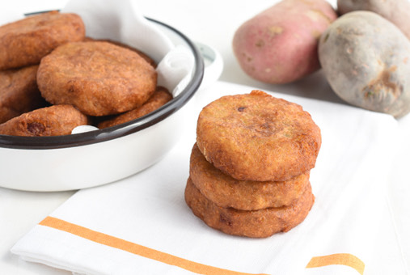

Milcao

Milcaos are a traditional Chilean dish. They're a type of pancake made with raw, grated potatoes, and cooked mashed potatoes, which are then mixed with other ingredients. There are other variations with caramelized onions, fried pork bits, or spicy pork sausage. They can be served with pico de gallo or sour cream. If you are looking for Sunday lunch ideas, this Milcaos recipe might just become one of your favorites.
Ingredients
- 1 pound potatoes, cooked and mashed
- 1 pound raw potatoes, peeled and grates
- 2 tablespoons butter
- cup onion, cut into thin slices
- 1/4 cup oil
- salt and pepper
Steps
- Dry the grated potatoes well with paper towels.
- Cook the onion in a pan with the butter for 5 minutes until the onions have caramelized.
- In a bowl, mix the mashed potato with the grated potato until you have a dough. Season with salt and pepper to taste.
- Form balls with the potato dough and poke a hole in the middle with your fingers. Fill it with approximately 1 teaspoon of the onion mix, or with your favorite filling. Close in the filling by making small pancakes.
- Heat the oil in a nonstick pan over medium-high heat, until the oil is hot.
- Place the pancakes in the oil in batches and reduce the heat to medium. Cook until golden brown, approximately 3 minutes. Flip them over and cook until they are golden brown on the other side, approximately 3 more minutes.
- Transfer them onto paper towels to drain.